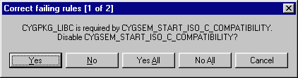

Consistency rules exist to verify that any configuration that may be generated is legal — it will build successfully and generate code that will behave in a reasonable manner.
Consistency rules are checked as configurable items are changed, and the Configuration Tool can suggest fixes for the consistency check failure(s) about to be introduced by suggesting a change to the configurable item or a related item:

If you accept the fix (by clicking the "Yes" or "Yes to All" buttons) an appropriate change will be made to the related configuration item. If you click "No" or "No to All" no change will be made, but the setting of the original item will still be possible. If you click Cancel at any stage the setting will be aborted and you will be alerted to the set of failing rules.
Note that the Configuration Tool will only be capable of suggesting fixes in limited circumstances. The conditions are summarized in the following tables:
Table 3-1. After changing an item's value
| Action | Failing rule | Suggested action | Types of item action may be applied to |
|---|---|---|---|
| Set | Requires | Enable required item | Boolean or radio |
| Set | Precludes | Disable precluded item | Boolean or radio in one- or two-item group |
| Unset | Required by | Disable requiring item | Boolean or radio in one- or two-item group |
| Set | Precluded by | Disable precluding item | Boolean or radio in one- or two-item group |
Table 3-2. Before building
| Rule | Suggested action | Types of item action may be applied to |
|---|---|---|
| Requires | Enable required item | Boolean or radio |
| Precludes | Disable precluded item | Boolean or radio in one- or two-item group |
The process of suggesting fixes may be disabled using the Tools->Options dialog.
For any item, you can identify currently failing consistency rules in the Properties Table; failing rules are marked with an exclamation point. A complete list may be obtained from the Tools->Options dialog.